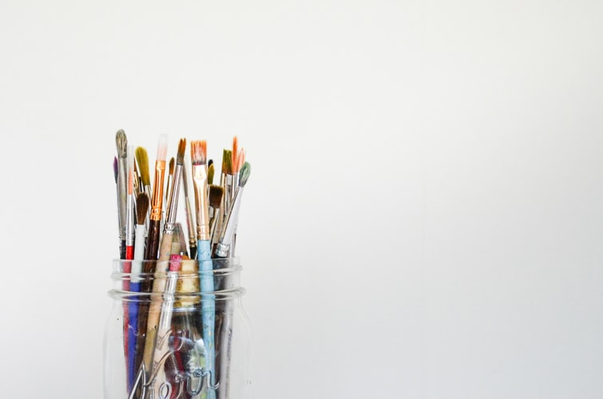
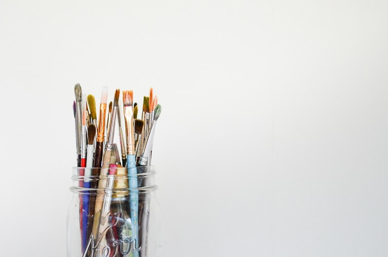

who am I?
Hello, My name is Rediet Mengiste, I am 19 years old. currently,I am learning
at Addis Ababa Institute of technolody in the software engineering deapartment.
I completed my highschool at Saint Mary's catholic school. I live in Addisu
Gebeya around Lazarist Mission school.I was born in Addis Ababa and raised in
many different places.I went to DireDawa,Hawassa,Debrezeit,Arbaminch
and other places.I love to tour places as I can.I have the passion for Art
and literature.I usually like to draw things in which I'm interested in.
Academic background
Academically I'm one of the top students in school.I always took my classes
seriously and try to score good results. When I was a kid I went to future hopes
for kindergarten and later I went to MacMillan academy until grade 8 and
finished my high school at Saint Mary's catholic school.
Family
I'm the youngest child in our family ,I have three sisters and brother.I live
with my mother, named "Abinet". My father passed by the year 2018Gc. since I
was the youngest from all, I was raised and treated specially from the family. I had a
strong bond with my dad before he passed away, so do with my mom. I am very
sociable and easily friendly and this behaviour of mine helped me a lot when I joined
5kilo campus.
 
